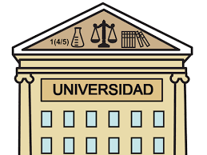

APLICAR LA UNIVERISIDAD: Siempre me ha gustado estudiar ingieneria electronica me
llama la atencion aprender cada uno de los circuitos y los microprocesadores y los diferentes
tipos que forman un solo desarrollo es muy curioso.
AYUDAR A MIS PADRES: Devolverles un poco de todo lo que han hecho por mi bienestar y que pueda lograr nuevas expectativas dandome animos ayudarlos economicamante como espiritualmente.
 TOMAR UN CURSO DE INGLES: Aprender ingles para tener una mejor manera de aplicar en un trabajo digno y me de ventajas a mi beneficio.
TOMAR UN CURSO DE INGLES: Aprender ingles para tener una mejor manera de aplicar en un trabajo digno y me de ventajas a mi beneficio.